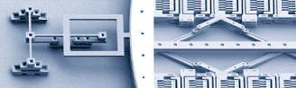

Micro-Electro-Mechanical Systems (MEMS)
Micro-Electro-Mechanical Systems, or
MEMS,
are devices formed by integrating mechanical elements, sensors,
actuators, and electronics onto a
common
silicon substrate using various processes of semiconductor
wafer fabrication
(for the electronic
components) and
micromachining
(for the micromechanical components).
This fusion of semiconductor and micromachining capabilities makes MEMS
an enabling technology for a whole new set of exciting products, while
revolutionizing those that already exist.
MEMS
brings the concept of complete
'system-on-a-chip' (SOC) a step higher, by allowing a
microelectronic device to: 1)
'feel'
its surroundings in ways never before
possible through the help of sensors
with moving
parts; and 2)
physically affect objects around it through microscopic
actuators, motors, hinges, linkages, pivots, gears, and the like. Indeed, MEMS almost
promises to deliver science fiction-inspired microscopic robots of the
future that can think, sense, and move inside the human body.
For now,
however, MEMS
applications
are more widely deployed in systems that are
commonly encountered in our daily lives, such as: 1) automobiles' airbag deployment systems, tire
pressure sensors, and suspension control mechanisms; 2) motion input
devices for gaming and training consoles; 3) blood pressure sensors; 4)
inkjet printers' ink deposition systems; 5) optical switching systems
for communications equipment; and 6) micromirror
arrays for projection TV's.
|
 |
|
Figure 1.
Examples of MEMS Structures
Source of
photos: www.memx.com
|
MEMS
microfabrication techniques
that are used to complement the wafer
fabrication techniques come in various forms, including: 1) silicon
surface micromachining; 2) silicon bulk micromachining; 3) electrical discharge
machining (EDM); and 4) the LIGA
(Lithographie, Galvanoformung, Abformung)
technology, which stands for "lithography, plating, molding".
Silicon surface machining,
which builds the micromechanical devices on the surface of a silicon
wafer, is widely used in the semiconductor industry, and for obvious
reasons. It integrates well into microelectronic products, since
it employs basically the same techniques used in conventional wafer
fabrication. In this technique, thin layers of
structural
and
sacrificial
materials are deposited over the wafer
surface in precise patterns. The micromechanical system is
completed and left on the surface upon removal of the sacrificial
material at the end of the process.
As in
wafer fabrication,
silicon dioxide
is often used as sacrificial material
in surface micromachining. On the other hand, structural features
are often built using polysilicon layers. With the sacrificial layers
serving as high-resolution masks to prevent the structural material from
being deposited in areas where it shouldn't be, the shapes of the
mechanical structures may be defined with high precision. The
sacrificial layers are then removed, usually by etching
with buffered
hydrofluoric acid (HF), leaving the mechanical features intact on the
silicon surface.
Silicon
bulk machining
refers to the formation of micromechanical systems by
etching them out of bulk silicon, allowing structures with greater
heights to be built. It employs either etchants that stop
on the crystallographic planes of the silicon wafer or etchants that act isotropically (i.e., active in all directions) to generate mechanical
parts. The resulting systems can then be integrated into other
structures by wafer bonding. Micromechanical structures that have
been fabricated through silicon bulk machining include mirrors and
accelerometer devices.
Electrical discharge machining (EDM),
which was developed by Matsushita, is basically just an extension of
conventional machine shop technology to fabrication of parts in
sub-millimeter sizes. It is, in fact, compatible with machine shop
production techniques.
A typical EDM process employs
high-frequency electrical sparks from a graphite or metal electrode to
disintegrate electrically conductive materials such as hardened steel or
carbide. The electrode and the workpiece are separated by a small
gap (which is about 10-100 microns) and immersed in a dielectric fluid
as this occurs.
LIGA
processes
combine IC
lithography
with
electroplating
and
molding
techniques to obtain depth. Patterns are formed on a substrate and
then plated with an electrodeposited metal such as nickel to create
three-dimensional molds. These molds can be used as the final
products themselves or may be injected with various materials.
LIGA has two main
advantages:
1) it allows the use of non-silicon and non-metal materials such as
plastic; and 2) it allows the fabrication of devices with very high
aspect ratios.
See Also:
System on a Chip;
Wafer
Fabrication;
IC
Manufacturing
HOME
Copyright
© 2005
www.EESemi.com.
All Rights Reserved.